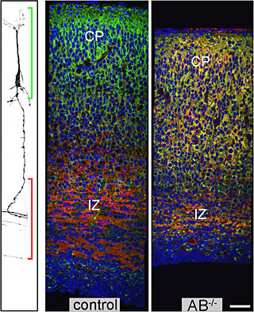

News Archives : 2005 : Mammalian SAD Kinases Are Required for Neuronal Polarization
by Joshua Sanes
February 11, 2005
A recent study by Kishi et al. shows how research programs can take unexpected directions. The authors wanted to study how small parts of neuronal processes become specialized to release neurotransmitter at synapses. As their starting point, they focused on a gene from worms called SAD-1, which had been found to be essential for synapse formation in this species. Reasoning that mammals might have similar genes that perform similar functions, they went looking in mice. They found two related genes, which they called SAD-A and SAD-B, showed that both code for proteins present in neurons, and generated mutant mice that lack both genes. These mutant mice had severe neurological defects consistent with the idea that SAD-A and SAD-B are required for synapse formation. But when they investigated further, they got a surprise. Normal neurons have two different types of processes, called axons and dendrites, with axons forming the sending sides of synapses and dendrites the receiving parts. This distinction is called neuronal polarity, and it is a central feature of brain wiring. In the SAD mutants, the neurons made a single type of process with both axonal and dendritic characteristics. This and other results showed that SAD is required for neuronal polarity, a phenomenon that has been under intense investigation recently but remains mysterious. The neurological defects in the mutants arise in large part from miswiring, because without proper axons, neurons can't reach proper targets, and if they can't reach their targets, they can't make proper synapses. So, perhaps loss of SAD leads to lack of synapses by an indirect route. However, it is also possible that SAD has two separate roles, being required both for polarity and for synapse formation. That is what the group is trying to figure out now.
| 
Polarization defects of SADA/B double mutant (AB-/- ) neurons in the cerebral cortex. Sections were labeled for axons (red), dendrites (green) and nuclei (blue). In controls, most dendrites are in the upper cortical plate (CP) and axons in the intermediate zone (IZ), as schematized at left. In mutants, axonal and dendritic markers are coexpressed. |
Co-authors Albert Pan and Josh Sanes (2 not pictured) |